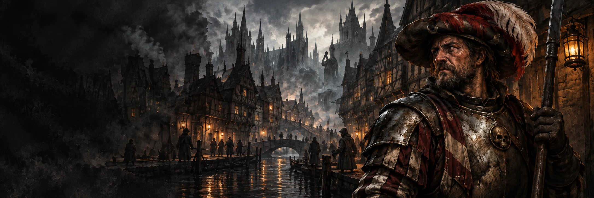

WarhammerFantasy Roleplay
Partez à l'aventure, enrichissez-vous, montez les échelons du pouvoir... Mmmh, ou tentez simplement de survivre.

Partez à l'aventure, enrichissez-vous, montez les échelons du pouvoir... Mmmh, ou tentez simplement de survivre.